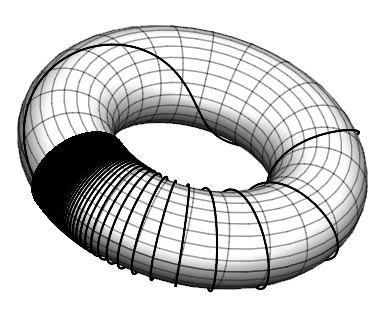

Solutions to Continued Fractions Exercises
Solutions to Continued Fractions Exercises¶
1: Write down as many questions as you can, about this section.
Can we use symbols in continued fractions? Matrices? Can we easily add, multiply, divide continued fractions? Compose them? Can we express known functions as continued fractions? Why aren’t continued fractions used more than they are? Can we visualize them in colour somehow? Is there any “continued fraction art”? We don’t know, but you might look at the Bridges Math Art website which is very interesting.
Who invented continued fractions first? Or were they invented more than once, in more than one place and time? Here’s an article from “Convergence”, a nice open access history journal by the Mathematical Association of America. We don’t really want to answer questions here, just show you some of the ones we thought of; but we find it sort of irresistible. Hey, consider our profession.
Are there continued fractions that don’t make sense as we let the number of partial quotients go to infinity? (Yes; with some negative entries). Are continued fractions applied to anything? (a quick googling finds some gems at Stack Exchange only some of which we knew). Then we found an open-access paper by Carlo Sanna that has several more. Are there “continued additions?” “continued multiplications?” (yes, and yes; called “infinite series” and “infinite products” respectively; you will likely learn about infinite series in calculus, but infinite products are less commonly seen in courses). “continued logarithms?” Yes, but only recently; work by Jonathan M. Borwein. Continued exponentials? Oh, yes! The “infinite tower of powers” is a perennial favourite question, and leads to the Lambert W function. Writing this, RMC is a little surprised that it hasn’t been mentioned till now!
2: Open a fresh Jupyter notebook and type in a code cell the following three lines:
x0 = 1
x1 = (x0 + 2/x0)/2
print (x1)
and press and hold the control key and the Enter key. There, you have just used Python to compute the first Newton iterate for the square root of two; the computer should have printed out 1.5.
x0 = 1
x1 = (x0 + 2/x0)/2
print (x1, x1**2-2)
1.5 0.25
3: Now copy the final two lines of that cell (not the x0=1) and put them in a fresh code cell, and change x0 to x1 and x1 to x2 everywhere. Run it again. The notebook should print 1.4166666666666665. Do it again 4 more times, changing x2 to x3, and x3 to x4, and x4 to x5, and x5 to x6 in their newly copied lines. You should find after running the program that both x5 and x6 are 1.414213562373095; no matter how many more times you do this (x7, x8, whatever) it won’t change any more.
x2 = (x1 + 2/x1)/2
print (x2, x2**2 - 2)
1.4166666666666665 0.006944444444444198
x3 = (x2 + 2/x2)/2
print (x3, x3**2-2)
1.4142156862745097 6.007304882427178e-06
x4 = (x3 + 2/x3)/2
print (x4, x4**2 - 2)
1.4142135623746899 4.510614104447086e-12
x5 = (x4 + 2/x4)/2
print (x5, x5**2-2)
1.414213562373095 -4.440892098500626e-16
x6 = (x5 + 2/x5)/2
print (x6, x6**2-2)
1.414213562373095 -4.440892098500626e-16
4: Now go back and modify your print statements to be print(x1, x1**2-2), print(x2, x2**2-2), and so on, all the way up to print(x6, x6**2-2) and run all the cells again (in order). You should see that the second numbers printed get smaller each time, until the line for x5. This says that x5 squared is only about -4.4 times ten to the minus 16 smaller than 2 (we will see in a moment that this is not a very trustworthy statement). That is, Python says that x5 is the exact square root of a number only a proton’s width away from two (see the appendix on floating point numbers).
We did this already, reported above
5: Now we are going to do the same in rational arithmetic by looking after the numerators and denominators \(p_n\) and \(q_n\) ourselves. Either by going back and changing all your previous cells, or by writing fresh cells, enter the following (it can all be in one cell)
p0 = 1
q0 = 1
p1 = p0**2 + 2*q0**2
q1 = 2*p0*q1
print( p1, q1, p1/q1, (p1/q1)**2-2, p1**2 - 2*q1**2, q1**2 )
#... (these dots mean do the case p2/q2, p3/q3, all the way up to the end)
p6 = p5**2 + 2*q5**2
q6 = 2*p5*q5
print( p6, q6, p6/q6, (p6/q6)**2-2, p6**2 - 2*q6**2, q6**2 )
You should be a little tired of cutting-and-pasting and changing 3s to 4s and 4s to 5s etc; it’s not too bad in such a short program (and that’s what it is, technically called a “straight-line program” because it has no loops), but it’s clearly repetetive and error-prone unless you are very finicky (we are very finicky). We’ll start using loops in a moment, but right now there are two other puzzles that should appear when you run this program. First, the pn/qn ratios should be giving the (apparently) same numbers as the xn before, and similarly the difference between squaring the ratio and 2. But the last two entries give (as a ratio) the exact numbers for (pn/qn)**2 - 2 (if we have done our algebra right). Our program generates the ratios \(1/4\), \(1/144\), \(1/166464\), and so on until
(If you did not get those numbers, go look for your typos)
Python says that
That’s about \(8.0\times 10^{-49}\), not the \(-4.4\times 10^{-16}\) from before. The sign isn’t even the same. What happened? The puzzles are resolved by thinking about floating-point arithmetic versus exact integer arithmetic. Write out a paragraph describing your understanding of the differences, and then read the symbolic algebra appendix and the floating-point appendix.
One final point of this exercise: we did not ever compare p3/q3 to p2/q2, or any iterate to its previous one; instead, we tried to decide how good any iterate was (as an approximation to the square root of two) by checking to see how close its square was to two. This is a kind of error analysis called “backward error analysis” and we will see that it is very useful.
p0 = 1
q0 = 1
p1 = p0**2 + 2*q0**2
q1 = 2*p0*q0
print( p1, q1, p1/q1, (p1/q1)**2-2, p1**2 - 2*q1**2, q1**2 )
p2 = p1**2 + 2*q1**2
q2 = 2*p1*q1
print( p2, q2, p2/q2, (p2/q2)**2-2, p2**2 - 2*q2**2, q2**2 )
p3 = p2**2 + 2*q2**2
q3 = 2*p2*q2
print( p3, q3, p3/q3, (p3/q3)**2-2, p3**2 - 2*q3**2, q3**2 )
p4 = p3**2 + 2*q3**2
q4 = 2*p3*q3
print( p4, q4, p4/q4, (p4/q4)**2-2, p4**2 - 2*q4**2, q4**2 )
p5 = p4**2 + 2*q4**2
q5 = 2*p4*q4
print( p5, q5, p5/q5, (p5/q5)**2-2, p5**2 - 2*q5**2, q5**2 )
p6 = p5**2 + 2*q5**2
q6 = 2*p5*q5
print( p6, q6, p6/q6, (p6/q6)**2-2, p6**2 - 2*q6**2, q6**2 )
3 2 1.5 0.25 1 4
17 12 1.4166666666666667 0.006944444444444642 1 144
577 408 1.4142156862745099 6.007304882871267e-06 1 166464
665857 470832 1.4142135623746899 4.510614104447086e-12 1 221682772224
886731088897 627013566048 1.4142135623730951 4.440892098500626e-16 1 393146012008229658338304
1572584048032918633353217 1111984844349868137938112 1.4142135623730951 4.440892098500626e-16 1 1236510294063800469693771621893337765354742124544
6: Lists in Python. Lists are enclosed in square brackets, like this:
x = [1.0] # x is a list with just one element, namely the floating-point number 1.0
print( x[0] ) # the first element has index zero; Python counts from 0
Type the above two lines into a fresh cell (don’t just copy-and-paste, really type; it’s practice for your fingers). You don’t have to type the comments (The hashtag and everything after that on each line) but you may.
x = [1.0] # x is a list with just one element, namely the floating-point number 1.0
print( x[0] ) # the first element has index zero; Python counts from 0
1.0
7: You can use a single list to store all the numbers x0, x1, x2, and so on; type these lines in
x = [1.0]
print( x[0] )
nxt = (x[0]+2/x[0])/2
x.append( nxt ) # This appends an element to the list "x" (if the list was called y, you would say y.append( nxt ))
print( "The list x is ", x )
print( "The first element of x is ", x[0] )
print( "The second element of x is ", x[1] )
That doesn’t look very different to using two variables x0 and x1, but it is: we can now automatically increment the indices.
x = [1.0]
print( x[0] )
nxt = (x[0]+2/x[0])/2
x.append( nxt ) # This appends an element to the list "x" (if the list was called y, you would say y.append( nxt ))
print( "The list x is ", x )
print( "The first element of x is ", x[0] )
print( "The second element of x is ", x[1] )
1.0
The list x is [1.0, 1.5]
The first element of x is 1.0
The second element of x is 1.5
8: Type in the following and execute them:
x = [1.0] # We reproduce our iteration using the list and indices into the list so we don't have new variable names
nxt = (x[0]+2/x[0])/2
x.append( nxt )
nxt = (x[1]+2/x[1])/2
x.append( nxt )
nxt = (x[2]+2/x[2])/2
x.append( nxt )
nxt = (x[3]+2/x[3])/2
x.append( nxt )
nxt = (x[4]+2/x[4])/2
x.append( nxt )
nxt = (x[5]+2/x[5])/2
x.append( nxt )
print( "The list x is ", x )
print( "The fifth element of x is ", x[4] )
print( "The sixth element of x is ", x[5] )
print( "The seventh element of x is ", x[6] )
x = [1.0] # We reproduce our iteration using the list and indices into the list so we don't have new variable names
nxt = (x[0]+2/x[0])/2
x.append( nxt )
nxt = (x[1]+2/x[1])/2
x.append( nxt )
nxt = (x[2]+2/x[2])/2
x.append( nxt )
nxt = (x[3]+2/x[3])/2
x.append( nxt )
nxt = (x[4]+2/x[4])/2
x.append( nxt )
nxt = (x[5]+2/x[5])/2
x.append( nxt )
print( "The list x is ", x )
print( "The fifth element of x is ", x[4] )
print( "The sixth element of x is ", x[5] )
print( "The seventh element of x is ", x[6] )
The list x is [1.0, 1.5, 1.4166666666666665, 1.4142156862745097, 1.4142135623746899, 1.414213562373095, 1.414213562373095]
The fifth element of x is 1.4142135623746899
The sixth element of x is 1.414213562373095
The seventh element of x is 1.414213562373095
9: Loops at last Type in the following and execute it:
x = [1.0]
for k in range(6):
nxt = ( x[k] + 2/x[k] )/2 # We don't really need "nxt" but it's a little more readable this way
x.append( nxt )
print( x )
The indentation is important there. More concisely, without the extra variable “nxt”,
x = [1.0]
for k in range(6):
x.append( (x[k]+2/x[k])/2 )
print( x )
x = [1.0]
for k in range(6):
nxt = ( x[k] + 2/x[k] )/2 # We don't really need "nxt" but it's a little more readable this way
x.append( nxt )
print( x )
[1.0, 1.5, 1.4166666666666665, 1.4142156862745097, 1.4142135623746899, 1.414213562373095, 1.414213562373095]
x = [1.0]
for k in range(6):
x.append( (x[k]+2/x[k])/2 )
print( x )
[1.0, 1.5, 1.4166666666666665, 1.4142156862745097, 1.4142135623746899, 1.414213562373095, 1.414213562373095]
10: Write a loop that uses two lists of integers, say p and q, and computes the exact integer numerators and denominators for the first six iterates. Our answer: When we print p and q we get the following:
We have given our answer.
11: Which method gives a better approximation to \(\sqrt{73}\), the \(a + b/(2a)\) formula or the “blending” formula taught in some high schools and mentioned above?
The high-school method is normally slightly less accurate, but not this time!
import numpy as np
rt73 = np.sqrt(73.0)
a = 8
b = 9
print(" 73 is {}^2 + {}= {}".format(a,b,a**2+b))
cfapprox = a + b/(2*a)
highschool = a + b/17
errcf = cfapprox - rt73
errhi = highschool - rt73
print("highschool error = {}, continued fraction error = {}".format(errhi,errcf))
73 is 8^2 + 9= 73
highschool error = -0.014591980611648125, continued fraction error = 0.018496254682469626
12: Which method would be easier to teach to high school students, do you think? Why do you think so?
We think that both could be done.
13: Write a Python program that plots the Gauss map on a torus. Think of it as wrapping the top and bottom of the unit square around a cylinder, and then bending the cylinder around to make a torus. Compare to the graph on the cover of the March 1992 issue of the American Mathematical Monthly, that is, Volume 99, no. 3.
We did this in Maple.
{kind=link}